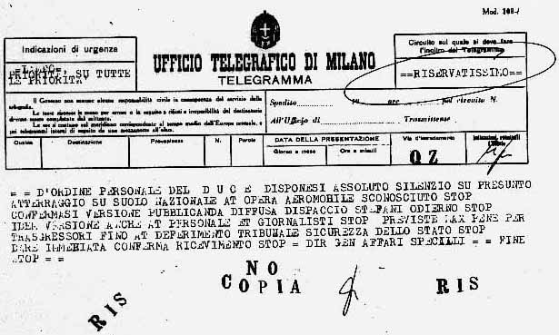
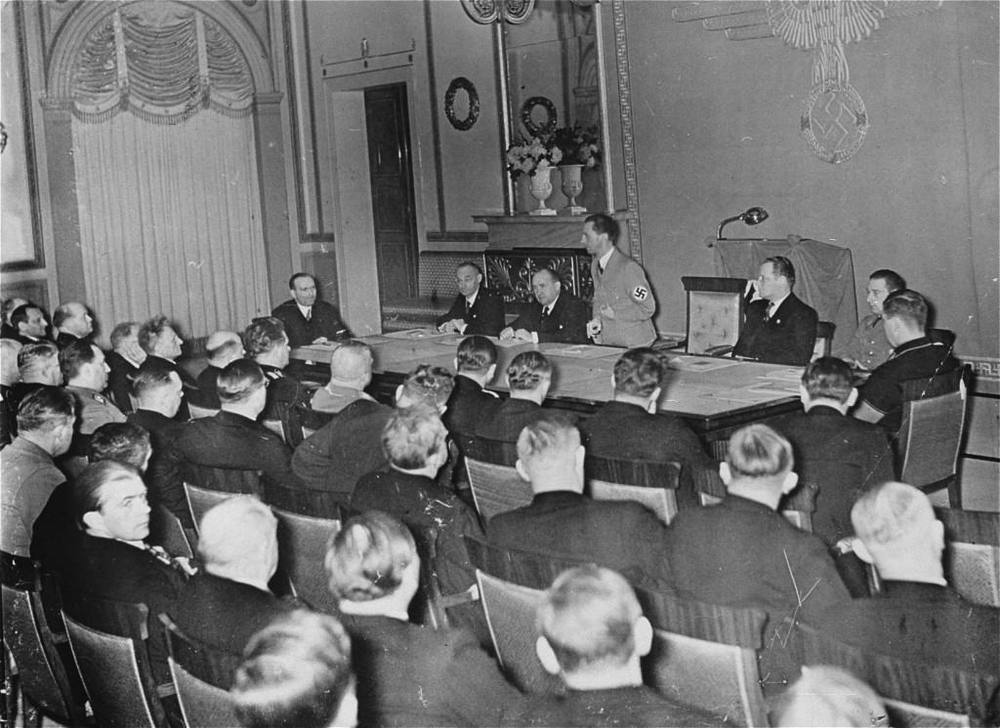
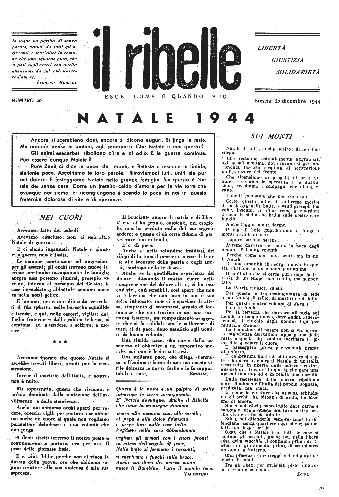
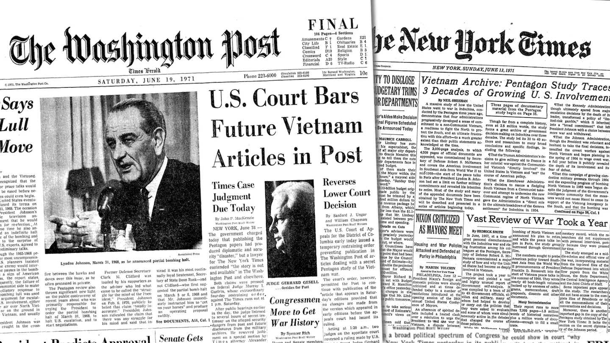
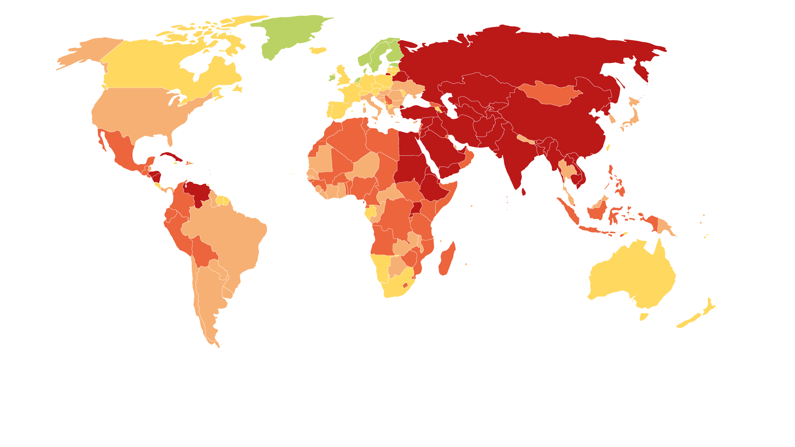

La parola come arma: controllo, censura e resistenza nel Novecento
Le radici del controllo: propaganda e dittature del Novecento
Per capire i pericoli di oggi, dobbiamo guardare al passato. Nel Novecento, i regimi totalitari hanno mostrato cosa succede quando si cancella la libertà di espressione. Questi governi volevano controllare la mente dei cittadini usando la propaganda in modo scientifico.
L'Italia Fascista e il MinCulPop
Il regime creò il Ministero della Cultura Popolare. Questo ufficio inviava ogni giorno ai giornali le cosiddette "veline", cioè ordini precisi scritti su fogli di carta velina. Le veline dicevano ai giornalisti cosa pubblicare e cosa nascondere. Ad esempio, ordinavano di mettere le notizie sul Duce sempre in prima pagina per farlo sembrare un mito. Addirittura, una velina del 1938 chiedeva di scrivere che Mussolini non era stanco dopo ore di lavoro nei campi. Nel 1941, in piena guerra, il ministero ordinò invece di non parlare assolutamente delle lunghe file della gente davanti ai negozi di cibo, nascondendo così la povertà del Paese.

La Germania Nazista e il Reichsministerium
Guidato da Joseph Goebbels, questo ministero controllava radio, cinema, giornali e arte. Goebbels diceva che il ministero non serviva a controllare, ma a fare da "ponte" tra governo e popolo (un modo per abbellire la realtà). La sua regola principale era semplice: la propaganda deve concentrarsi su pochissimi concetti e ripeterli all'infinito, perché la gente finisce per credere a ciò che sente più spesso.

L'URSS Stalinista e l'Unione degli Scrittori
In Unione Sovietica, il controllo dello Stato obbligava tutti gli artisti a seguire un solo stile, chiamato "realismo socialista". Gli scrittori dovevano descrivere il mondo non come era davvero, ma come voleva il partito. Stalin diceva che lo scrittore doveva essere un "ingegnere delle anime umane", cioè qualcuno che usava le parole per ricostruire e manipolare la mente delle persone. Chi non ubbidiva veniva arrestato o eliminato.
Oggi non esistono più questi uffici di censura vecchio stile. Tuttavia, le regole della propaganda del Novecento (come la ripetizione continua e la modifica dei dettagli) sono le stesse usate oggi nel mondo virtuale.
La lotta per la verità: censura e resistenza dell’informazione
Ancora oggi, in molte parti del mondo, i governi provano a bloccare le informazioni scomode. Bloccano i social network, spengono Internet durante le proteste o perseguitano i giornalisti. Ma dove c'è censura, nasce sempre una "resistenza".
La stampa clandestina in Italia
Durante la Seconda Guerra Mondiale e l'occupazione nazifascista, i partigiani e i cittadini liberi rischiavano la vita per stampare giornali e volantini segreti. Visto che la stampa ufficiale era controllata dal regime, questi fogli nascosti erano l'unico modo per raccontare la verità sulla guerra e organizzare la Resistenza.

I Pentagon Papers
Questo è un caso famosissimo avvenuto negli Stati Uniti. Erano documenti segreti del governo americano che dimostravano che il presidente Nixon aveva mentito al popolo e al Parlamento sulla guerra del Vietnam, sapendo che non si poteva vincere. Un dipendente dello Stato decise di passarli ai giornali (come il New York Times). Il governo provò a bloccare la pubblicazione per "segreto di Stato", ma la Corte Suprema diede ragione ai giornali, spiegando che la stampa deve servire chi è governato e non chi governa.
Se nel mondo reale la resistenza usava i giornali clandestini, oggi nel mondo virtuale si usano strumenti tecnologici come le VPN (che superano i blocchi dei governi) e le chat crittografate per proteggere i messaggi dai controlli.

L'Indice RSF
L'Indice RSF (Reporters Sans Frontières) 2024: È una classifica che esce ogni anno e misura quanto è libera la stampa in tutto il mondo. Ci mostra che la libertà di informazione è fragile anche nelle democrazie. Oggi i nemici dei giornalisti non sono solo le dittature, ma anche i grandi gruppi privati, la violenza online e gli algoritmi che decidono quali notizie farci vedere. L’Italia in questa classifica è al 46° posto.
